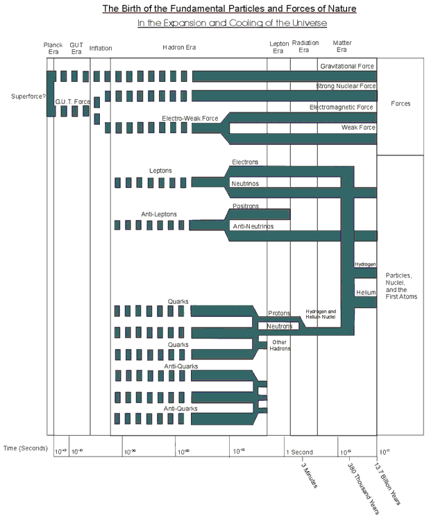
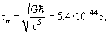
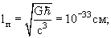

Этот реферат повествует об истории развития Вселенной с самых
первых моментов ее существования. Для начала стоит определиться с временными
масштабами, о которых пойдет речь.
На Рис.1 изображена схема ветвления частиц и сил по мере
удаления от момента большого взрыва. Эта схема обобщает все этапы, о которых
пойдет речь ниже.

Рис. 1
Стоит отметить, что шкала времени измеряется в секундах. Казалось бы – не самый подходящий масштаб для описания истории Вселенной. Однако, это не так, ведь большинство описываемых событий произойдут именно в первую секунду. Как видно из рисунка, возраст Вселенной порядка 1017с, тем не менее, ученые могут довольно уверенно сказать, что произошло вплоть до 10-15с от момента Большого Взрыва и имеют достаточно правдоподобные теории вплоть до 10-43с – наименьшего временного отрезка согласно современным теориям. Таким образом, масштаб, равный одной секунде, ближе к времени жизни Вселенной, нежели к наименьшему промежутку времени.
Основные процессы
Стоит помнить две вещи о рождении Вселенной: начальное состояние было сильно конденсированным и горячим, впоследствии же Вселенная расширялась и охлаждалась; материя может быть создана из энергии в соответствии с уравнением Эйнштейна. Пусть эти два момента помогут нам объяснить Большой Взрыв.
Расширение и охлаждение
Когда вы сжимаете газ, он нагревается. Ведь та же самая
энергия должна содержаться в меньшем объеме, поэтому тепловое движение
становится интенсивнее.
Однако, если сжать газ достаточно сильно, то больше сжать его
не получится – потребуется больше энергии, чем вы сможете обеспечить. С
Вселенной же такие ограничения не срабатывают – если включить обратную
перемотку, то она будет сжиматься до размеров галактики, звезды, планеты,
футбольного поля, атома, протона… И так будет продолжаться до т.н.
Планковской длины 10-33см, что на 18 порядков меньше размеров
протона. Это наименьшая единица пространства, при длинах меньше известные
законы физики не работают. Мы не знаем, что было, когда Вселенная была
меньше и была ли она когда-нибудь вообще меньше. ОТО предполагает, что
Вселенная может сжаться до точки нулевого размера и бесконечной плотности,
называемой сингулярностью. Но это, вероятно, означает, что в таких
экстремальных условиях ОТО так же не будет работать. Есть основания
полагать, что планковская длина – это действительно наименьшая возможная
длина.
Когда Вселенная сжалась до размеров 10-33см,ее
температура была порядка 1032К. К счастью для нас, она не
осталась горячей и плотной, а начала расширяться и охлаждаться.
Рождение и уничтожение
Поскольку мы состоим из вещества, мы и мыслим теми же
категориями. Однако, вещество занимаем очень малую часть пространства –
большая же его часть пуста. В среднем на один квадратный метр приходится
один атом. Но все это пространство заполнено фотонами – редкими
высокоэнергичными от космического газа и звезд и ордами низкоэнергичных,
оставшихся со времен рождения Вселенной. На каждый протон, нейтрон или
электрон приходятся миллионы фотонов – следствие того, что в ранней
Вселенной доминировал свет, а не вещество.
Сегодня температура реликтового излучения достаточно низкая –
2.7К. Что же такое температура излучения? Это легко объяснить, если
представить себе абсолютно черное тело, которое имеет тот же спектр. В нашем
случае это АЧТ с температурой 2.7К. Нынешний фон настолько слаб, что почти
незаметен. Но так было не всегда – во времена Большого Взрыва эти фотоны
были настолько мощны, что создавали вещество. Два энергичных фотона
сталкивались, аннигилировали, и рождались частица и античастица, например
электрон и позитрон.
Отсюда видно, что вещество и антивещество рождались в равных
пропорциях. Ранняя Вселенная представляла из себя суп из частиц, античастиц
и фотонов, кроме того, в ней было примерное равенство между частицами (и
античастицами) и фотонами.
Т.к. чем больше массы надо произвести, тем больше нужно
энергии, то, чем дальше мы погружаемся в прошлое, тем более тяжелые частицы
можем увидеть. Например Х-бозонов теорий Великого объединения, или, может
быть, тяжелых суперпартнеров суперсимметричных теорий.
Рождение Вселенной
Планковская эра: от нуля до 10-43с
В начале… мы точно не знаем, что произошло. Есть теории,
объясняющие, что происходило до 10-43с – планковского времени.
Это, безусловно, слишком короткий отрезок времени, чтобы называться эрой.
Действительно, мы даже не знаем, имеет ли смысл говорить о временных
промежутках, меньших планкосвкого времени.
Единственное, что мы можем с уверенностью сказать, к концу
планковской эры – планковскому моменту, гравитационное взаимодействие
отделилось от остальных трех взаимодействий, которые были в т.н. группе
Великого объединения. Чтобы описать, что происходило раньше (если можно
использовать слово «раньше»), нам нужна квантовая теория гравитации.
Возможно, SUSY-теории или теории струн как раз то,
что мы ищем, но они пока не получили экспериментального подтверждения. Пока
оставим планковскую эру как маленький, но значительный пробел, который
необходимо заполнить.
Характеристики:   T = 1032К.
Эра Великого объединения: 10-43с – 10-35с
По сравнению с планковской эрой туман неизвестности
потихоньку рассеивается. Между 10-43с и 10-35с во
Вселенной действовали 2 силы – гравитация и сила Великого объединения. Поэтому
это время и называется эрой Великого объединения. Мы не можем сказать точно,
какие из теорий верны, поэтому название немного вводит в заблуждение, но мы
можем сказать, что либо сильное, слабое и электромагнитное взаимодействие были
единым целом, либо теории Великого объединения не верны.
В то время Вселенная была очень горячей, хотя и остывала с 1032К
до 1029К. Пространство было заполнено газом из гравитонов и
GUT-бозонов и не было никакого различия между лептонами и кварками.
Частицы должны были представлять из себя какие-то гибриды.
Характеристики: t = 10-43-10-35c; T = 1032-1029K; E = 1019-1016 ГэВ.
Инфляция: 10-35 - 10-32с
Когда с момента Большого Взрыва прошло 10-35с,
Вселенная остыла до 1029К. В этот момент произошло отделение сильного
взаимодействия от электрослабого. Это нарушение симметрии, вероятно, происходило
в разных частях Вселенной по-разному и с разными силами. Возможно Вселенная
разделилась на части, которые были отделены друг от друга стенками – дефектами
пространства-времени. Там могли быть и другие дефекты, например космические
струны или магнитные монополи. Но сейчас мы всего этого не видим из-за другого
результата разделения
GUT-силы – Инфляции.
Когда силы разделились, по крайней мере в некоторых (в том числе и во всех
видимых нам) частях Вселенной возник ложный вакуум. Энергия застряла на
высоком уровне, заставляя пространство удваиваться каждые 10-34с.
Т.о. произошло около 100 удвоений – это огромное количество. Вселенная от
квантовых масштабов перешла к размерам апельсина.
Одна из причин, почему мы так мало знаем о Вселенной до инфляции,
заключается в том, что инфляция очень сильно ее изменила или, как минимум,
ту часть, в которой мы живем. Даже если монополи или гибриды бы существовали
в нашем регионе до инфляции, то после нее они поредели бы настолько, что
обнаружить их было бы практически невозможно.
Адронная эра: 10-32 – 10-4с
Рождение вещества: 10-32 – 10-10с
Когда Вселенная расширялась в результате инфляции, она
быстро остывала. Когда инфляция закончилась, энергия ложного вакуума,
которая была движущей силой, стала выделяться и конденсироваться в новые
частицы и античастицы. Т.к. сильное и электрослабое взаимодействия
разделились, появилось два различных семейства частиц – кварки, которые
чувствовали сильное взаимодействие, и лептоны, которые нет.
Но новые частицы не взаимодействовали так, как сейчас.
Электрослабое взаимодействие все еще было единым целым, поэтому было мало
различий между ароматами частиц – u
и d,
s
и c,
b
и t
кварки были более-менее взаимозаменяемы, как и электроны и нейтрино в каждом
из поколений. Кварки различались по цветам, но температура все еще была
слишком высока, чтобы они объединялись в адроны. К тому же частицы и
античастицы могли сталкиваться и аннигилировать. К счастью было небольшое
нарушение симметрии между веществом и антивеществом – примерно 1 частица на
тысячу миллионов, что сыграло важную роль в дальнейшем.
Разделение электрослабого взаимодействия: 10-10с
Следующее крупное событие произошло на 10-10 секунде жизни Вселенной – температура упала настолько, что электрослабое взаимодействие разделилось на слабое и электромагнитное. При этом фотоны остались безмассовыми, а W и Z бозоны, а так же кварки и лептоны, приобретают массу. Т.о. появляются все 4 известных нам взаимодействия и все становится более знакомым.
Формирование адронов: 10-6 – 10-4с
Начиная с 10-6с, с кварками произошли две
вещи.
Во-первых, Вселенная остыла настолько, что тони начали
поддаваться сильному взаимодействию и объединяться в бесцветные группы –
адроны. Группы из трех частиц называются барионами, а из пары
частица-античастица – мезонами. Самые легкие барионы – протон и нейтрон –
появились как раз в это время.
Во-вторых, энергия Большого Взрыва снизилась на столько, что
уже не могла компенсировать аннигиляцию кварков и их производных. Тем не
менее, они продолжали сталкиваться и аннигилировать, пока не осталась та
самая 1 частица на тысячу миллионов, которой аннигилировать было не с кем.
Лептоны же продолжали пополняться, что обеспечило им преимущество перед
кварками.
Лептонная эра: 10-4 – 10с
В начале лептонной эры вещество состояло из немногих
протонов и нейтронов, окруженных морем лептонов. Но, т.к. Вселенная
продолжала остывать, наступил момент, когда энергии нейтрино перестало
хватать для рождения пар лептон-антилептон. Т.о. произошло отделение
нейтрино. Нынешняя температура этих реликтовых нейтрино 1.9К и их еще
сложнее обнаружить, чем реликтовые фотоны.
Вслед за этим оставшиеся таоны и мюоны распадались в
электроны, которые продолжали аннигилировать с позитронами, пока не остался
тот самый дефект, созданный при инфляции. Т.к. полный заряд Вселенной
сохраняется – количество электронов было равно количеству оставшихся
протонов. А электронные нейтрино присоединились в своим родственникам.
Из-за того, что нейтрон немного тяжелее протона, процесс
превращения его в протон доминировал над обратным. В результате этого, к
окончанию лептонной эры протонов стало примерно в пять раз больше, чем
нейтронов. А всего на одну частицу вещества приходилось по миллиарду
фотонов, которые все еще были достаточно энергичными по нашим меркам.
Так началась радиационная эра…